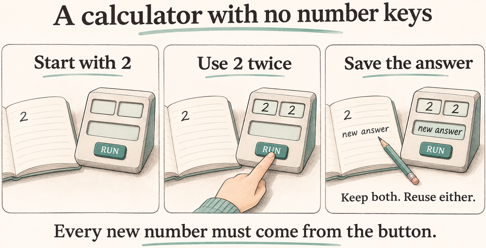
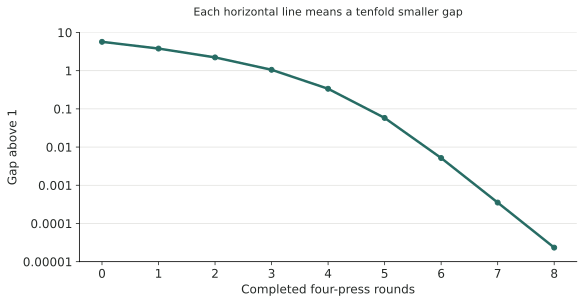
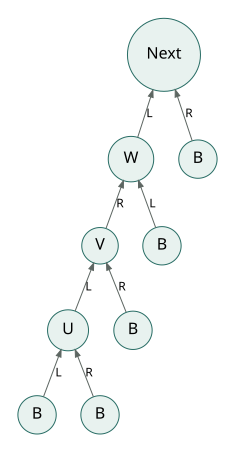
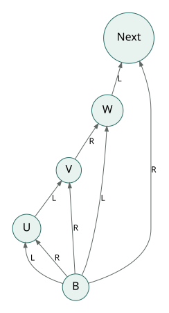
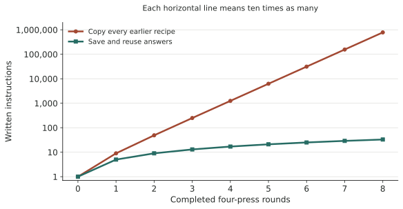

Imagine a calculator with one operation and one starting number. You can copy that number, combine copies, and feed the answers back into the same operation. You can keep going for as long as you like, but a finished recipe must have a last step. How much can this calculator build?
Suppose the starting number is 2. You can use two copies of 2 for your first calculation. Once you have an answer, you can save it and use it again. But you cannot type in a helpful 0 or 1 whenever you like. You have to make it using what you already have.
This is the question behind my paper, Positive Seeds, Exactness, and Certificates for Operation Search. A very small collection of tools can sometimes build far more than we expect. To understand how much, we need to distinguish an exact answer from a close approximation.


Try the calculator
The button’s rule uses a number called e, approximately 2.718, and the natural logarithm, written ln. Raising e to a power and taking a natural logarithm undo each other: e to the power 2 is about 7.389, and the logarithm of that exact result is 2.
The button raises e to the power of the left input, then subtracts the logarithm of the right input. If a is the left input and b is the right one, we can write the rule as:
Try 2 in both boxes. The answer is about 6.696. Then keep 2 on the left and use the new answer on the right.
Your notebook
First press: left input 2, right input 2, answer approximately 6.695909. Enable JavaScript to choose saved answers and build a longer recipe.
This is a rounded numerical preview. The symbol ≈ means “approximately.” Each saved entry records its two inputs. A display of 1 would not establish an exact mathematical answer; very large or unstable calculations may exceed this preview’s limits.
The right input must be positive: this calculator does not allow the logarithm of zero or a negative number. Every press must obey that rule, including presses inside a long recipe. A zero or negative starting number would leave us unable to make the first press.
Why try to make 1?
Making 1 would give us a way to remove the logarithm from the button’s rule. The logarithm of 1 is zero, so putting 1 in the right box leaves just the exponential:
With that available, a short recipe recovers the logarithm too. Longer recipes give addition, subtraction, multiplication and division, with division by zero still forbidden. Each recipe uses only the original button.
How the button recovers a logarithm
Start with a positive number u and an available 1. Calculate F(1, u), which gives e − ln(u). Raise e to that answer using the rule above. Finally, put 1 in the left box and this new answer in the right box.
The final logarithm undoes the exponentiation. The result is e − (e − ln(u)), which equals ln(u). Every right input was positive.
The paper gives an explicit multiplication recipe with 57 written applications of the button’s rule. That is a construction we know works, without claiming it is the shortest. But all these arithmetic recipes assume we have 1 available. Our notebook still starts with 2.
A recipe that approaches 1
There is a useful way to begin from any positive starting number. Put it in both boxes and press once. The paper proves that the answer is always above 2. Save it, then repeatedly apply the four-press recipe below.
We will count three things:
- A press applies the button’s rule once.
- A round follows the four-press recipe, using saved answers.
- A written instruction is one appearance of the button’s rule in a recipe. Referring to a saved answer adds no instruction.
The four-press recipe
Call the current saved answer B. Keep it available for the whole round. The other letters name the answers made along the way.
| Press | Left input | Right input | Save as |
|---|---|---|---|
| 1 | B | B | U |
| 2 | U | B | V |
| 3 | B | V | W |
| 4 | W | B | Next |
For the next round, use “Next” as the new B. Notice that B fills five input boxes across the four presses. Filling a box reuses a number; it does not calculate it again.
Starting with 2 and making the preliminary press gives about 6.696. The chart follows the gap between each later answer and 1.

| Round | Saved answer | Gap above 1 |
|---|---|---|
| 0 | 6.695908918 | 5.695908918 |
| 1 | 4.794412188 | 3.794412188 |
| 2 | 3.226961075 | 2.226961075 |
| 3 | 2.055420225 | 1.055420225 |
| 4 | 1.336175266 | 0.336175266 |
| 5 | 1.057987751 | 0.057987751 |
| 6 | 1.005170727 | 0.005170727 |
| 7 | 1.000352481 | 0.000352481 |
| 8 | 1.000023312 | 0.000023312 |
This recipe gets closer to 1 without ever reaching it in finitely many rounds. The proof establishes both parts: every round stays above 1, and for any positive gap we choose, enough rounds make the remaining gap smaller. A different recipe might still make exactly 1.
Saving answers changes the size of the recipe
Look again at the five places where B enters the recipe. If B stands for a calculation, we could copy that whole calculation into all five places. Or we could calculate B once and save it in our notebook.
For the first round, B is the preliminary calculation using 2 and 2. Copying it five times gives five preliminary instructions plus the four instructions in the round: nine altogether. Saving B once needs only five.
Copy it out: 9 instructions

Save it once: 5 instructions

On each later round, copying multiplies the previous instruction count by five and adds four. Saving answers adds just four. Here is every round through eight:

| Round | Copied out | Saved answers |
|---|---|---|
| 0 | 1 | 1 |
| 1 | 9 | 5 |
| 2 | 49 | 9 |
| 3 | 249 | 13 |
| 4 | 1,249 | 17 |
| 5 | 6,249 | 21 |
| 6 | 31,249 | 25 |
| 7 | 156,249 | 29 |
| 8 | 781,249 | 33 |
The notebook makes the description much smaller. It cannot keep the numbers themselves small: even a short recipe may produce enormous intermediate answers. The raw four-press recipe can overwhelm an ordinary calculator, so the convergence chart uses an equivalent formula from the paper that is easier to evaluate accurately.
From almost 1 to almost any number
Approaching 1 is enough to recover a great deal of arithmetic approximately. With an exact 1, the recipes can make fractions such as 7 divided by 3. Replacing 1 with a sufficiently close approximation keeps the final answer close to that fraction. There are only finitely many presses to protect, so the replacement can also be made accurate enough to keep every logarithm legal.
Fractions can approach every number on the number line, including numbers such as the square root of 2. For that example, 1.4, 1.41 and 1.414 give successively better approximations. Choose a fraction near the target, then make a calculator answer near that fraction.
The resulting theorem is broad: from any positive starting number, a finite valid recipe can get within any chosen positive error of any real target. “Real” means a number on the number line. The recipe may depend on the target and the allowed error.
We can describe this using an interval, a stretch of the number line between two endpoints. Every interval, however narrow, contains an answer the calculator can make. Mathematicians call a set with this property dense.
The paper also lets the calculator receive a varying input alongside its fixed positive starting number. It can then approximate a continuous function: a rule assigning an output to each input, without sudden jumps. Across any fixed closed interval, including its endpoints, one recipe can meet the chosen error allowance everywhere.
Some starting numbers do make exactly 1
So far we have kept the starting number fixed. Changing it reveals another route to an answer. A recipe’s output can move from one side of 1 to the other as its starting number changes.
Here is a concrete example using the same four-press recipe, applied directly to the starting number this time, without the preliminary press. Starting at 0.85 gives an answer above 1. Starting at 0.90 gives an answer below 1. The output changes continuously between them, so it must pass through 1 somewhere.

The paper proves that every positive interval contains a starting number from which some finite recipe makes exactly 1. It uses the approximation theorem to build a suitable crossing in whatever interval we choose. The recipe can change with the interval.
That includes tiny intervals around 2. Knowing there is a successful starting number nearby still leaves the question about 2 itself unanswered.
The possible overall answers have a surprising shape. Either every positive starting number succeeds, or the successful numbers form a countable set: they can be arranged in a list, with each one appearing at a finite position. Such a list need not end. Fractions are a familiar example of an infinite list that nevertheless has members between any two distinct real numbers.
Why one successful interval would settle the general question
Suppose a single recipe returned exactly 1 for every starting number throughout some positive interval. We already know that any positive start can make an answer inside that interval. Feed that answer into the successful recipe. The combined recipe makes exactly 1 from the original start.
Here “one recipe works throughout an interval” is stronger than “every interval contains a successful start.” The paper proves the latter. Whether the former holds remains open.
What would a proof of impossibility look like?
To show that 2 can never make 1, failed experiments would not be enough. We would need a reason covering every valid recipe. One possible approach would find a property shared by every obtainable answer that excludes 1. The paper does not supply such a property for this calculator.
It does show how this kind of argument works in a smaller setting. Set the calculator aside for a moment and work with two inputs that can each be either 0 or 1. Our tools are XOR, which returns 1 when two inputs differ, and NOT, which flips 0 to 1 or 1 to 0. The constants 0 and 1 are available too.
We want to build AND, which returns 1 only when both inputs are 1. There are four input pairs:
| First input | Second input | Wanted answer: AND |
|---|---|---|
| 0 | 0 | 0 |
| 0 | 1 | 0 |
| 1 | 0 | 0 |
| 1 | 1 | 1 |
Read down the columns. The inputs give 0011 and 0101; AND gives 0001. Each four-digit pattern records the answers in the table’s order.
Both input patterns contain an even number of ones. So do the constant patterns 0000 and 1111. NOT preserves that evenness because there are four positions. XOR combines two patterns and cancels positions where both have a 1; combining even counts and removing ones in pairs leaves another even count.
All 16 possible answer patterns
Filled cells: the eight patterns these tools can make.
This unchanging property is called an invariant. However long the recipe becomes, it keeps an even number of ones in its answer pattern. That proves AND is impossible with these tools.
The paper develops a general version for finite problems: gather the answer patterns and check whether the allowed operations can ever leave the collection. A target outside a collection that contains all the starting patterns and survives every operation is excluded.
A checker must allow the whole calculation
Suppose our inputs are only 0 and 1, but calculations may use integers. Give us two buttons: negate a number, and add 1. Together they make NOT: negate the input, then add 1.
| Input | After negation | After adding 1 |
|---|---|---|
| 0 | 0 | 1 |
| 1 | −1 | 0 |
The second calculation passes through −1. A checker that restricts every intermediate value to 0 or 1 would reject it. In fact, the paper gives a valid impossibility certificate for that restricted system. Applying the certificate to the integer system would give the wrong answer.
A finite list of inputs does not make every intermediate value belong to that list. The checker must account for every calculation the original rules permit.
For our original calculator, finding a comparable obstruction would be a way to prove failure. Finding one valid recipe for 1 would prove success. The finite example explains the kind of evidence needed; it does not decide the real-number problem.
Back to the notebook
Starting with 2, we now have a recipe that approaches 1, a way to approximate any real target, and successful starting numbers in every positive interval around 2. We also know why saving answers makes the recipes easier to describe.
The notebook still has an empty place waiting for exactly 1. Can some finite recipe fill it?